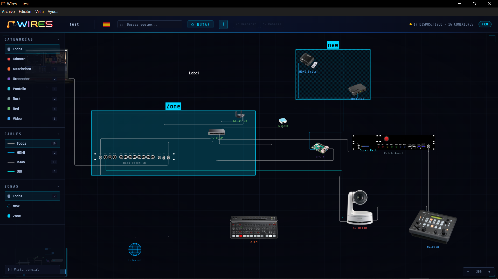
Acerca de Wires
Versión 1.4.1 — 6 de septiembre de 2026
Wires es una herramienta de documentación y planificación para el enrutamiento de señales de audio/vídeo/iluminación. Te permite modelar la arquitectura técnica de una instalación colocando dispositivos en el lienzo, conectándolos con cables y organizando esas conexiones en rutas de señal lógicas y visuales.
¿A quién va dirigido?
Wires está diseñado para técnicos audiovisuales, streamers, integradores de sistemas, contratistas de sonido e iluminación, responsables técnicos de iglesias o eventos, y cualquier profesional o aficionado involucrado en el diseño, la documentación o la operación de arquitecturas de señal complejas.
Funciones clave
- Dispositivos personalizados: importa una imagen de tu dispositivo o elige una forma geométrica, luego añade tantos puertos (puntos de conexión) como sean necesarios para hacerlo interactivo.
- Lienzo: espacio de trabajo donde puedes colocar tus dispositivos libremente.
- Cables: nombra tus dispositivos y conéctalos entre sí, luego categoriza cada conexión.
- Rutas de señal: agrupa los cables en rutas lógicas para documentar el trayecto completo de una señal, desde el origen hasta el destino.
- Zonas: define zonas en el lienzo para estructurar el plano por escena, rack o área técnica.
- Etiquetas de texto: anota el plano con texto libre para añadir información contextual.
- Exportaciones: genera una exportación HTML interactiva, un PDF o una lista de material lista para usar.
- Interfaz multilingüe: disponible en inglés, francés y español.
Aspectos destacados
Visualización de la imagen del dispositivo
Cada dispositivo puede representarse mediante una imagen o una forma geométrica de color. Importa tus propias imágenes o selecciona una forma para que el plano sea inmediatamente legible para todo el equipo, incluso sin conocimiento previo del proyecto.
Animación de señales
Inicia una animación en cualquier ruta: un punto luminoso se desplaza a lo largo de los cables desde el origen hasta el destino. Esta visualización permite verificar de un vistazo el trayecto completo de la señal, su dirección y que la cadena esté intacta.
Exportación HTML interactiva
El plano se puede exportar como un archivo HTML autónomo que reproduce fielmente el lienzo, las imágenes de los dispositivos y la lista de rutas. También se puede publicar en una página web para presentar y explicar claramente tu configuración.
Casos de uso
- Documenta el enrutamiento de audio de un concierto: consolas, stageboxes, amplificadores y monitores, siguiendo cada bus desde el escenario hasta el público.
- Mapea la infraestructura de vídeo de un estudio de broadcast: cámaras, mezcladoras, enrutadores, codificadores y monitores — con una exportación HTML para compartir con el equipo de producción o el cliente.
- Diseña la configuración audiovisual de una iglesia: sonorización, pantallas, cámaras, sala de control de vídeo, transmisión en directo y monitores de escenario.
- Organiza la configuración audiovisual de un creador de contenido para YouTube, Instagram o streaming en directo: cámaras, micrófonos, iluminación, ordenador, interfaz de audio, pantallas y equipos de red.
- Diseña la arquitectura de una sala de conferencias: fuentes HDMI, matrices, pantallas y sistemas de videoconferencia — usando la animación para verificar que cada señal llega a su destino correcto.
Versiones Free y PRO
La versión gratuita está limitada a 10 dispositivos
Una exportación PDF a 75 dpi.
Los subproyectos son exclusivos de Wires PRO.
Todas las demás funciones están disponibles en ambas versiones.
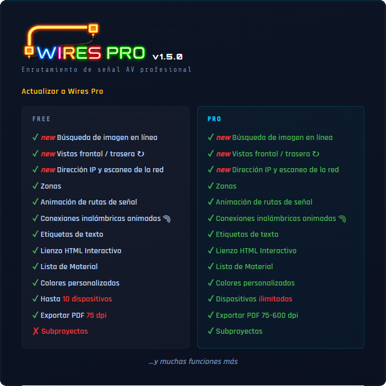
Guía de inicio rápido
Paso 1 — Crear o abrir un proyecto
Al iniciar Wires, una pantalla de inicio muestra tus proyectos recientes.
Haz clic en + Nuevo proyecto para crearlo.
Paso 2 — Añade tu primer dispositivo
Haz clic en el botón + en el encabezado → ⬡ Nuevo dispositivo .
Se abre el selector de imagen:
- Tres formas de hacerlo: buscarla en línea con , importarla desde tu ordenador (PNG, JPG, WEBP, AVIF, GIF o BMP), o elegir una forma geométrica. Se abre la ventana Configuración de imagen y puntos de conexión — configúrala (ver Dispositivos). Haz clic en ✓ Aplicar . La ventana Agregar un dispositivo se abre, con la imagen ya colocada: introduce el nombre, ajusta el nombre corto y la categoría si es necesario. Haz clic en Colocar en el lienzo .
Paso 3 — Crea tu cable para conectar dos dispositivos
Haz clic en el botón + en el encabezado → ⤢ Nuevo cable . Aparece un banner en la parte superior que te guía. Los puntos de conexión presentes en los dispositivos aparecen. Haz clic en un punto de conexión del dispositivo ORIGEN, luego haz clic en un punto de conexión del dispositivo DESTINO (se requiere el mismo tipo de cable). El cable se traza automáticamente. Excepciones: USB y audio analógico aceptan conectores mixtos.
Paso 4 — Crea una ruta de señal
Una ruta de señal traza el trayecto de una señal a través de una cadena de cables y la anima en el lienzo. Cuando creas un cable, aparece una ventana:
- elige Crear nueva ruta o Ruta existente — ver Rutas de señal para más detalles.
ℹ Un cable sin ruta se elimina automáticamente si cancelas la ventana.
Paso 5 — Organiza la vista
Desplaza la rueda del ratón para hacer zoom. Haz clic con el botón izquierdo y arrastra sobre una zona vacía del lienzo para desplazar la vista.
Para dibujar un marco de selección y seleccionar varios dispositivos, mantén Alt + clic y arrastra.
Pulsa F para mostrar todos los dispositivos del lienzo.
Paso 6 — Nombra y guarda
Haz clic en el nombre del proyecto en el encabezado superior para renombrarlo. Al cerrar el programa, aparecerá un cuadro de diálogo CAMBIOS SIN GUARDAR. Haz clic en Guardar como… para elegir la ubicación y el nombre del archivo.
Paso 7 — Cambia el idioma de la interfaz
Wires está disponible en tres idiomas: inglés, francés y español. Haz clic en la bandera de la parte superior para cambiar de idioma en cualquier momento. La interfaz se actualiza inmediatamente. Se añadirán más idiomas en futuras versiones.
Descripción general de la interfaz
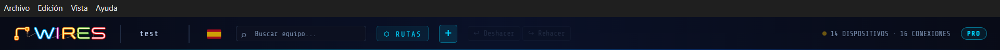
Barra de encabezado
El encabezado contiene el nombre del proyecto, los controles de navegación y un icono de bandera en el lado derecho. Haz clic en él para cambiar el idioma de la interfaz entre inglés, francés y español.
| Elemento | Función |
|---|---|
| Logo / WIRES | Enlace al sitio www.alkoda-wires.com |
| Nombre del proyecto | Haz clic para renombrar el proyecto |
| Bandera | Haz clic para cambiar de idioma |
| Buscar equipo... | Buscar dispositivos en el lienzo |
| Botón ROUTES | Abrir el panel de Rutas de señal |
| Botón + | Lista desplegable: ⬡ Nuevo dispositivo , ⤢ Nuevo cable o T Nuevo texto , ▭ Nueva zona . |
| Botones ↩ Deshacer / ↪ Rehacer | Recorre el historial de cambios (10 niveles) |
| N DISPOSITIVOS / N CONEXIONES | Número actual de dispositivos y cables en el lienzo |
Barra lateral izquierda
- Tres secciones de filtro, cada una con dos modos (aislar / ocultar, alternados por el interruptor de su fila Todos ):
- Categorías — aísla u oculta los dispositivos de un tipo; en modo aislar, sus conexiones con otras categorías se muestran como fantasma.
- Cables — aísla u oculta los dispositivos conectados por el tipo de cable seleccionado.
- Zonas — aísla u oculta los dispositivos situados en la zona seleccionada.
- Los tres filtros se aplican simultáneamente — ver Biblioteca y categorías para el detalle completo.
- La barra lateral se repliega automáticamente — pasa el cursor para abrirla, B para fijarla.
Panel de información derecho:
Cable o Dispositivo
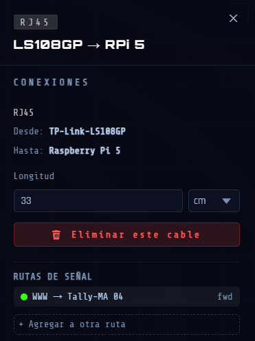
Se abre automáticamente al hacer clic en un dispositivo o cable. Muestra los detalles, las conexiones y las acciones del elemento seleccionado. Ciérralo con el botón ✕, Esc o haciendo clic en un lienzo vacío.
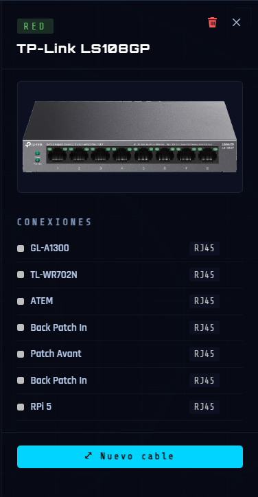
Rutas de señal
Se abre mediante el botón ⬡ ROUTES en el encabezado. Muestra todas las rutas de señal creadas en el proyecto: su nombre, los segmentos de cable que las componen y su sentido de circulación. Desde este panel puedes iniciar o detener la animación de flujo de una ruta, reordenar segmentos, invertir el sentido de un segmento y crear caminos alternativos (splits). El panel puede permanecer abierto mientras trabajas. Un primer clic en el lienzo vacío cierra el panel sin detener las animaciones en curso; un segundo clic las detiene.
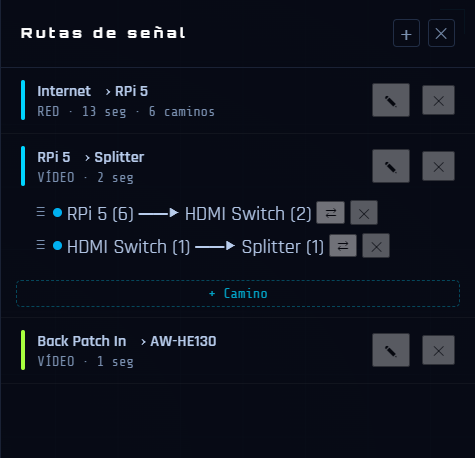
Minimapa

Esquina inferior izquierda. Muestra una vista simplificada del lienzo. Haz clic o arrastra en cualquier punto del minimapa para navegar.
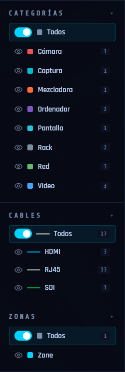
Proyectos
Crear un nuevo proyecto
- Ctrl + N o ⌘ + N (mediante el menú Archivo)
- Pantalla de inicio → botón + Nuevo proyecto .
- Si hay trabajo sin guardar, un cuadro de diálogo pregunta qué hacer primero.
Abrir un proyecto
- Ctrl + O o ⌘ + O o Archivo → Abrir...
- La pantalla de inicio muestra los 10 proyectos más recientes (haz clic para abrir)
Guardado automático (recuperación tras un fallo)
Wires guarda automáticamente un archivo de sesión 3 segundos después del último cambio.
Si la aplicación falla o se cierra a la fuerza, el próximo inicio mostrará una entrada "● última sesión" en la pantalla de inicio.
ℹ Esto es solo una recuperación tras un fallo: no sustituye el guardado manual.
Importar un proyecto
ℹ Esta función es exclusiva de la versión Wires PRO.
- Permite integrar un archivo .wires existente en el lienzo actual como un bloque independiente (zona de subproyecto). Función PRO — ver Subproyectos.
Dispositivos
Agregar un dispositivo
Haz clic en el botón + en el encabezado, luego ⬡ Nuevo dispositivo .
- Se abre una ventana para elegir la imagen. Tres formas de hacerlo: buscarla en línea, importarla desde tu ordenador (PNG, JPG, WEBP, AVIF, GIF o BMP), o elegir una forma geométrica (rectángulo, círculo, triángulo, cuadrado).
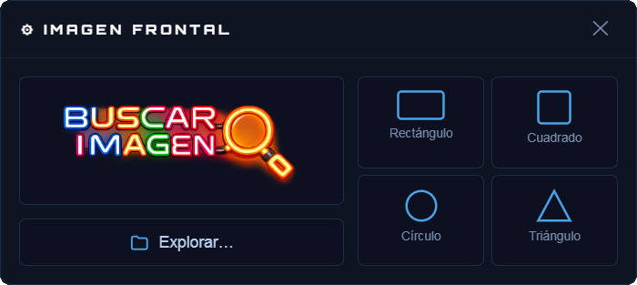
Buscar la imagen de un dispositivo
- Haz clic en para abrir la búsqueda.
- Escribe el Modelo: la lista Propuestas se rellena a medida que escribes. Contiene los modelos cuyo nombre coincide, y todos los productos de las marcas cuyo nombre coincide — escribir «dec» muestra el LinkDeck de Kiloview y todos los dispositivos de Decimator Design.
- La Marca es opcional; rellenarla limita las propuestas a ese único fabricante.
- Haz clic en un modelo: sus Imágenes propuestas aparecen a la derecha, con sus dimensiones y su formato.
- Haz clic en una imagen para seleccionarla. ⛶ Ampliar la vista previa permite verla en grande antes de decidir.
- Haz clic en Elegir esta imagen para continuar con ella.
- Si ninguna propuesta encaja, o si no hay ninguna imagen disponible para el producto, Buscar abre una ventana de navegación. Hacer clic en una imagen la añade a las imágenes del producto, donde la seleccionas como las demás. La casilla ✓ Fondo neutro orienta esa búsqueda hacia las imágenes con fondo liso.
- La ventana Configuración de la imagen se abre automáticamente — configúrala (ver más abajo).
- Haz clic en ✓ Aplicar .
- Se abre el cuadro de diálogo Agregar un dispositivo, con la imagen y sus puertos ya colocados. Si la imagen viene de la búsqueda, el nombre y el nombre corto ya están rellenados; siguen siendo modificables. Si no, completa el nombre y el nombre corto. Asignále una categoría.
- Haz clic en Colocar en el lienzo para colocar el dispositivo.
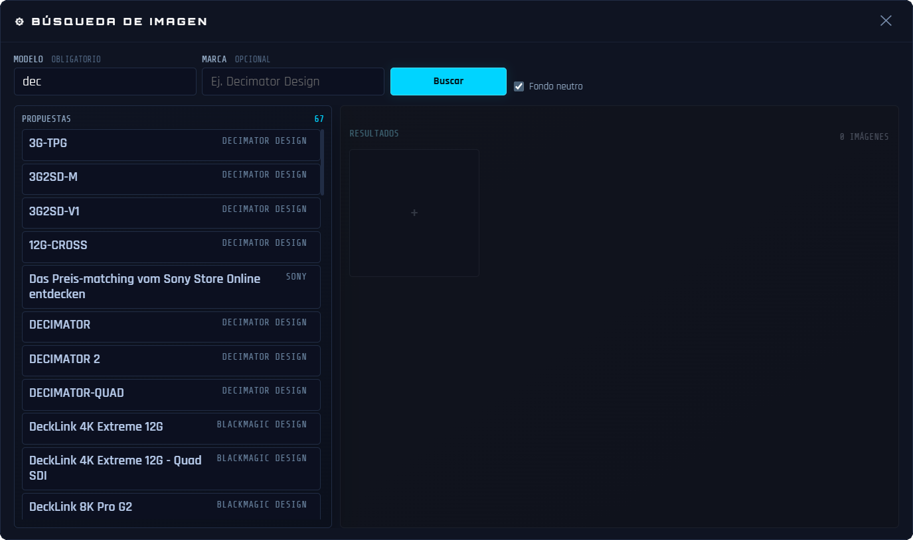
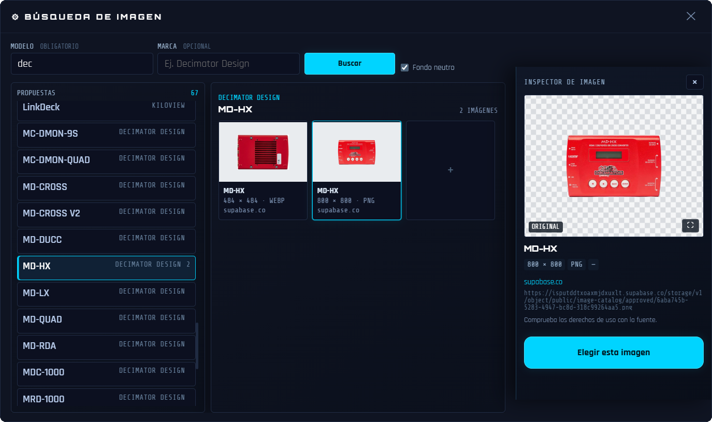
ℹ La versión gratuita está limitada a 10 dispositivos. Wires PRO elimina este límite.
Ventana Configuración de la imagen y puntos de conexión — paso a paso
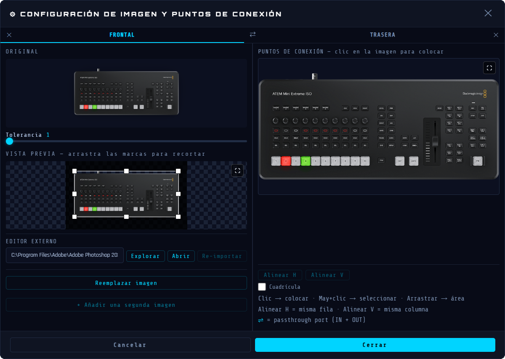
Para modificar la imagen de un dispositivo existente, consulta Editar la imagen de un dispositivo.
Esta ventana tiene tres áreas: Arriba izquierda = imagen original | Abajo izquierda = resultado sin fondo con controladores de recorte | Derecha = editor de puertos.
ℹ Con una forma geométrica, los pasos 1 y 2 siguientes no se aplican. Ve directamente al paso 3.
Paso 1 — Elimina el fondo
- Ajusta la eliminación del fondo con el control deslizante Tolerancia.
- Si el resultado no es satisfactorio, usa el editor externo: introduce la ruta de tu editor de imágenes, haz clic en Abrir, edita el archivo y vuelve a importarlo.
Paso 2 — Recorta la imagen
- Aparece automáticamente un rectángulo de recorte alrededor del dispositivo.
- Arrastra los controladores para ajustar el área de recorte.
- Arrastra el centro del rectángulo para mover toda el área de recorte.
- El botón ⛶ abre la vista previa en grande para permitirte ajustes con precisión de píxel.
Paso 3 — Añade puntos de conexión (puertos)

El área derecha muestra la imagen recortada del dispositivo. Aquí es donde colocas los puntos de conexión que representan los conectores físicos.
ℹ Con una forma geométrica, no es posible colocar un punto de conexión fuera de la forma.
| Acción | Efecto |
|---|---|
| Haz clic en ⛶ | Abre la zona en pantalla completa, con la lista de puertos justo al lado y los botones Alinear/cuadrícula agrupados debajo. |
| Haz clic en un área vacía de la imagen | Añade un punto de conexión en esa posición exacta. Tipo predeterminado: HDMI. |
| Arrastra sobre un área vacía de la imagen | Dibuja un rectángulo de selección para seleccionar varios puntos existentes a la vez. |
| ⇧ + arrastrar | Añade a la selección existente sin borrarla. |
| Haz doble clic en un punto de conexión | Resalta su fila en la lista de puertos de abajo y abre la lista desplegable de tipos. |
| Haz clic y arrastra un punto de conexión | Reposiciona el punto (mantén pulsado >0,2 s antes de moverlo). |
| ⇧ + clic en un punto de conexión | Activa/desactiva la selección |
Paso 4 — Configura cada puerto de la lista
Debajo de la imagen, cada puerto aparece como una fila en la lista:
| Elemento | Función |
|---|---|
| Cuadrado de color | Muestra el color del tipo de cable de un vistazo. |
| Número #N | Índice de puerto (1, 2, 3…), o un número personalizado. |
| Campo N.º | Número del puerto, editable. |
| Lista desplegable de tipo | Haz clic para elegir el tipo de conector: Dante, DC, DisplayPort, HDMI, Jack 3.5, Jack 6.35, MADI, Óptico, RCA/Cinch, RJ45, SDI, SDI-F, Speakon, Thunderbolt, USB-A, USB-C, USB-DC, XLR — o Personalizado… para crear un tipo de cable a medida. |
| Botón ⇌ | Alternar a doble dirección: el puerto acepta conexiones IN y OUT. Cuando está activo, el botón se vuelve cian. |
| Botón ✕ | Elimina este puerto. |
ℹ Dos puertos que comparten el mismo número se iluminan en rojo y parpadean (fila de la lista y contorno del punto en la imagen).
Paso 5 — Alinea los puertos (opcional)
- ⇧ + clic (o ⇧ + arrastrar) para seleccionar 2 o más puntos de puerto.
- Alinear H para mover todos los puntos seleccionados al mismo nivel horizontal (misma coordenada Y).
- Alinear V para mover todos los puntos seleccionados a la misma columna vertical (misma coordenada X).
- ↪ Útil para alinear una fila de puertos en una imagen de dispositivo perfectamente recta.
Paso 6 — Aplica
- Haz clic en ✓ Aplicar para confirmar. El recorte se aplica y los puertos se guardan.
- La ventana Configuración de la imagen se cierra y vuelve al cuadro de diálogo Agregar un dispositivo.
- La vista previa del dispositivo muestra la imagen limpia con los puntos de puerto superpuestos.
Si una imagen ya la usa otro aparato idéntico, aparece un campo Número. Opcional, te permite asignar un número para diferenciar los aparatos.
Ventana “Agregar un dispositivo”
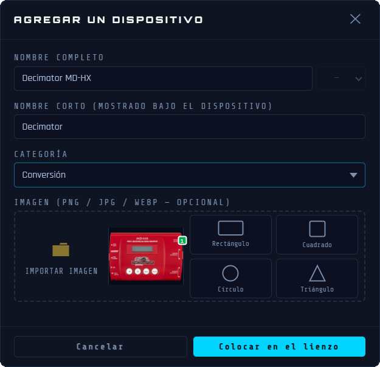
| Campo | Notas |
|---|---|
| Nombre | Nombre completo del dispositivo: obligatorio. |
| Nombre corto | Etiqueta corta mostrada en el lienzo. Se rellena automáticamente a partir del nombre. Editable. |
| Categoría | Un dispositivo llega en la categoría «Sin clasificar». Elige su categoría en la lista. Selecciona Personalizado… si quieres crear una nueva categoría. |
| Área de imagen | Muestra la imagen ya elegida — haz clic en ella para reconfigurarla. Los botones de importación y de formas siguen disponibles al lado para elegir otra. |
Editar un dispositivo
| Acción | Efecto |
|---|---|
| Haz clic en la etiqueta (lienzo) | Renombrar: escribe y pulsa Intro |
| Haz doble clic en el dispositivo | Abre la configuración de la imagen para editar la imagen y los puertos |
| Arrastra el dispositivo | Mueve el dispositivo : los cables lo siguen en tiempo real |
| Arrastra la esquina superior izquierda | Redimensiona proporcionalmente |
| ⇧ + clic en el dispositivo | Traer al frente — mueve este dispositivo delante de cualquier dispositivo superpuesto. |
Cambiar la categoría de un dispositivo
Cuando un dispositivo está seleccionado, su categoría se muestra como una insignia de color en la parte superior del panel de información derecho (por ejemplo VIDEO, CAMERA, AUDIO). Puedes reasignar la categoría directamente en cualquier momento.
- Haz clic en el dispositivo en el lienzo para abrir el panel de información derecho.
- Haz clic en la insignia de categoría de color en la parte superior del panel.
- Se abre una lista con todas las categorías disponibles, cada una con su punto de color.
- Haz clic en una categoría → la insignia se actualiza y el número de dispositivos en la barra lateral izquierda se refresca.
ℹ Si el mismo dispositivo está presente en varios ejemplares, Wires propone moverlos todos de una vez.
Selección de varios dispositivos
| Gesto | Efecto |
|---|---|
| Alt + clic y arrastrar en el lienzo | Dibuja un rectángulo de selección: todos los dispositivos que toca quedan seleccionados |
| Ctrl + clic en un dispositivo | Lo añade o lo quita de la selección actual |
| ⌘ + clic | |
| Clic en un dispositivo seleccionado | Quita este dispositivo de la selección |
| Clic en el lienzo | Borra la selección |
| Clic y arrastrar en el lienzo | Desplaza la vista sin perder la selección |
| Supr | Elimina todos los dispositivos seleccionados (requiere confirmación) |
| Esc | Borra la selección |
Los dispositivos seleccionados se resaltan con un brillo cian. El panel de información derecho enumera todos los dispositivos seleccionados. Haz clic en una fila para expandirla y ver sus conexiones.
El botón Eliminar este dispositivo permite eliminar este dispositivo individualmente desde este panel.
Copiar, cortar, pegar
Estas acciones operan sobre los dispositivos seleccionados en el lienzo. La selección debe estar activa antes de copiar o cortar. Pegar crea un duplicado independiente, colocado en el centro de la vista.
| Atajo | Acción |
|---|---|
| Ctrl + C | Copia los dispositivos seleccionados al portapapeles |
| ⌘ + C | |
| Ctrl + X | Corta los dispositivos seleccionados |
| ⌘ + X | |
| Ctrl + V | Pega un duplicado en el centro de la vista. |
| ⌘ + V |
ℹ Los cables conectados a los dispositivos copiados no se incluyen al pegar — cada duplicado se coloca sin conexión, listo para cablear.
Eliminar un dispositivo
- Selecciona el dispositivo y pulsa la tecla Supr o ⟵
- O: botón 🗑️ en el panel de información derecho
ℹ Los cables conectados al dispositivo eliminado quedan huérfanos (un extremo flotante). Permanecen visibles y pueden reconectarse o eliminarse.
Icono de Internet
Cada proyecto incluye un icono de Internet integrado — añadido automáticamente la primera vez que se abre y presente en todos los proyectos nuevos. Se puede eliminar si tu configuración no usa una conexión externa, y restaurar en cualquier momento.
Apariencia y ubicación
- Icono de globo (azul claro), situado por defecto en la parte inferior izquierda del lienzo.
- Se puede arrastrar libremente a cualquier posición del lienzo.
- Desconectado (sin cables conectados): icono mostrado en escala de grises con opacidad reducida.
- Conectado (al menos un cable conectado): icono mostrado en color.
Eliminación
Selecciona el icono de Internet, luego pulsa Supr o haz clic en el botón en el panel de información derecho. Se solicitará una confirmación: si hay cables conectados, se eliminarán del lienzo y de todas sus rutas.
Restauración
Si el icono de Internet ha sido eliminado, haz clic en el botón + en el encabezado, luego ⬡ Nuevo dispositivo . En la ventana ⚙ IMAGEN que se abre, haz clic en ⟳ Restaurar icono Internet. El icono se coloca de nuevo en la parte inferior izquierda de la vista actual, en un lugar vacío.
Conexión
El icono de Internet representa una conexión hacia el exterior (red, nube, internet). Tiene un puerto RJ45 y se conecta como cualquier otro dispositivo.
El sentido del cable es importante para la animación de las rutas de señal — defínelo antes de conectar.
+ luego ⤢ Nuevo cable y sigue las instrucciones del banner.
Exclusiones
- No aparece en la biblioteca de dispositivos estándar.
- No aparece en la barra lateral izquierda.
- No aparece en la exportación de la lista de material en PDF.
ℹ El icono de Internet representa un punto de conexión de red externo. Está presente por defecto en todo proyecto nuevo, puede eliminarse si no es necesario, y restaurarse en cualquier momento.
Editar la imagen de un dispositivo
Una vez que un dispositivo está colocado en el lienzo, puedes volver a editar su imagen sin afectar sus puntos de conexión ni los cables ya conectados a él.
Abrir la configuración de imagen de un dispositivo existente
Haz doble clic en cualquier dispositivo del lienzo. La página CONFIGURACIÓN DE IMAGEN Y PUNTOS DE CONEXIÓN se abre con la imagen actual y todos los puntos de conexión ya cargados y listos para editar.
Reemplazar la imagen
Haz clic en Reemplazar imagen para sustituir la imagen actual por un nuevo archivo. La eliminación del fondo se aplica automáticamente. Los puntos de conexión existentes permanecen en su sitio — reposiciónalos si es necesario.
Usar un editor de imágenes externo (opcional)
La interfaz incluye una conexión directa a cualquier editor de imágenes instalado en tu equipo (Photoshop®, GIMP, Affinity Photo®, etc.). El flujo de trabajo tiene cuatro pasos.
Paso 1 — Configura el editor
En la sección Editor externo, en la parte inferior izquierda de Configuración de la imagen, introduce la ruta completa del ejecutable de tu editor o haz clic en Explorar para localizarlo. Esta ruta se guarda y se recuerda entre sesiones.
Paso 2 — Exporta al editor
Haz clic en Abrir . Wires convierte la imagen actual a PNG y la escribe en un archivo temporal, luego la abre directamente en tu editor. El botón Re-importar se activa.
Paso 3 — Edita y guarda
Realiza tus cambios en el editor externo. Guarda el archivo (Ctrl + S o ⌘ + S). Puedes guardar y ajustar tantas veces como sea necesario. Wires no lo volverá a importar hasta que se lo pidas explícitamente.
Paso 4 — Vuelve a importar
Cuando estés satisfecho, haz clic en Re-importar en CONFIGURACIÓN DE IMAGEN Y PUNTOS DE CONEXIÓN. Wires lee el archivo guardado, vuelve a aplicar la eliminación del fondo con el ajuste de tolerancia actual y actualiza la vista previa. Los puntos de conexión y los cables no se ven afectados. Puedes repetir los pasos 3 y 4 tantas veces como sea necesario antes de hacer clic en ✓ Aplicar .
Advertencia sobre el tamaño del lienzo
Si usas un editor externo y las dimensiones de la imagen cambian (márgenes añadidos, recorte, etc.), Wires te avisará al reimportar. Haz clic en OK para continuar — luego reposiciona manualmente los puntos de conexión para que coincidan con la nueva imagen.
Cables (Conexiones)
Creación de un cable
- Haz clic en el botón + en la cabecera y luego ⤢ Nuevo cable (o en el botón ⤢ Nuevo cable en el panel de información de un dispositivo)
- La barra superior muestra — haz clic en el punto del puerto de origen
- Luego muestra — haz clic en el punto del puerto de destino.
ℹ Puertos bidireccionales (IN/OUT): al hacer clic en un puerto doble, aparece una ventana emergente que muestra . Pasa el ratón para ver cada opción resaltada y haz clic en tu elección.
ℹ Conexión inalámbrica (WiFi  /Bluetooth
/Bluetooth  /HF
/HF  ): no se dibuja ningún cable en el lienzo — solo se crea el enlace lógico. Un puerto inalámbrico acepta un número ilimitado de conexiones, en ambos sentidos.
): no se dibuja ningún cable en el lienzo — solo se crea el enlace lógico. Un puerto inalámbrico acepta un número ilimitado de conexiones, en ambos sentidos.
- El cable se traza automáticamente.
- Un aviso de asignación de ruta aparece automáticamente tras la creación.
Para cancelar el modo cable: pulsa Esc o haz clic en el botón ✕ Cancelar en la barra.
El nombre se rellena automáticamente a partir de los dispositivos conectados, pero se puede modificar. Elige un color y un tipo de señal (Audio, Datos, DMX, Vídeo, Red, Alimentación, USB, MIDI o Personalizado). Haz clic en Crear para confirmar. El tipo de señal podrá cambiarse en cualquier momento más adelante.
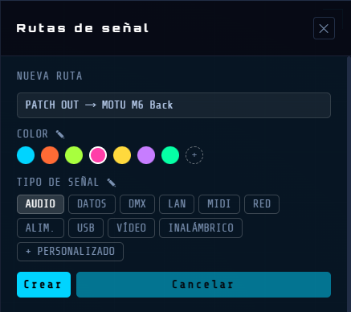
Selección de un cable
- Haz clic en cualquier punto del cable (una amplia zona de clic invisible facilita la tarea). Para un enlace inalámbrico (sin trazado dibujado), haz clic en su símbolo en el dispositivo en su lugar.
- El panel de información de la derecha muestra el tipo de cable, los puntos de terminación y las acciones
Modificación del camino de un cable
Los cables se enrutan automáticamente. Puedes ajustar el camino manualmente:
El primer o el último segmento de un cable (el que está conectado directamente a un dispositivo) se puede reorientar. Haz clic derecho sobre él, o sobre su asa de extremo, para abrir un menú con dos opciones: Cambiar dirección o Crear un codo.
| Acción | Efecto |
|---|---|
| Arrastra un segmento | Mueve ese segmento perpendicularmente - ajusta el camino |
| Clic derecho en un segmento cerca del dispositivo (o su asa) | Abre el menú: Cambiar dirección / Crear un codo. |
| Teclas de flecha después de Cambiar dirección | Cambia la dirección de salida del segmento: ← → ↑ ↓ |
| Teclas de flecha después de Crear un codo | Inserta un codo de 90° con las flechas. |
| Arrastra el punto de conexión | Reconecta el extremo a un nuevo puerto. |
ℹ Todos los ajustes del camino del cable se guardan en el proyecto y se pueden deshacer.
Tipos y colores de cables
ℹ Solo los puertos del mismo tipo pueden conectarse — excepto los conectores de audio analógico (XLR, Jack 3.5, Jack 6.35, RCA/Cinch) y los conectores USB (USB-A, USB-C), que son compatibles entre sí.
Eliminar un cable
- Selecciona el cable y luego pulsa la tecla Supr o ⟵
- O: botón Eliminar este cable en el panel de información de la derecha
Estados visuales del cable
| Estado | Apariencia | Vista previa |
|---|---|---|
| Pasar el ratón sobre un cable | Zona de clic invisible más amplia, más fácil de pulsar | |
| Huérfano | Punteado, semitransparente – un extremo sin dispositivo | |
| Ruta activa | Brillo luminoso – forma parte de una ruta activa | |
| Ruta atenuada | Casi invisible – no forma parte de la ruta activa |
Texto
Las etiquetas de texto son anotaciones independientes que puedes colocar en el lienzo: nombres de zona, descripciones, notas o cualquier otra información que pertenezca al diagrama pero no a un dispositivo.
Colocar un texto
Haz clic en el botón + en la cabecera y luego T Nuevo texto .
El cursor del ratón se convierte en una cruz y aparece una barra en la parte superior del lienzo:
"Clic en el lienzo para agregar un Texto".
Pulsa Esc o en ✕ Cancelar en la barra para cancelar la colocación.
Mover un texto
Pasa el ratón sobre un texto: el cursor se transforma en ✥. Haz clic y arrastra para reposicionar el texto.
Edición del texto
Haz doble clic en un texto para entrar en modo de edición. Escribe un nuevo texto para reemplazar el contenido, o haz clic en el lugar deseado para modificarlo directamente. Se conserva el formato enriquecido: distintas fuentes, negrita, cursiva y subrayado pueden coexistir en diferentes partes de una misma etiqueta.
Pulsa Esc para cancelar todos los cambios.
Haz clic en cualquier punto fuera del cuadro para salir.
Formato
Selecciona un texto para acceder a su formato en el panel de información de la derecha:
| Control | Función |
|---|---|
| Fuente | Lista desplegable de las fuentes del sistema disponibles. En modo edición, se aplica solo al texto seleccionado. Aparece vacía cuando la etiqueta contiene varias fuentes. |
| Tamaño | Tamaño de fuente. También se puede ajustar arrastrando el asa azul en la esquina superior izquierda de la etiqueta. |
| B | Negrita. En modo edición, se aplica solo a la selección de texto actual. Se activa si una parte de la selección está en negrita. |
| I | Cursiva. Mismo comportamiento de selección que la negrita. |
| U | Subrayado. Mismo comportamiento de selección que la negrita. |
| Color | Selector de color de texto: se aplica a toda la etiqueta. |
| Orientación | ⟷ Horizontal (por defecto) o ↕ Vertical |
ℹ B, I y U son sensibles a la selección en modo edición: se aplican solo al texto seleccionado. Si la selección abarca un texto con varios formatos, los indicadores se muestran si el formato está presente en la selección.
Redimensionar el cuadro de texto
Por defecto, un cuadro rodea su contenido. Haz clic en ⤡ Redimensionar en el panel de información de la derecha para entrar en el modo de redimensionamiento del cuadro:
Aparecen cuatro asas de borde en los bordes del cuadro.
Arrastra cualquier asa para redimensionar el cuadro: el texto se redistribuye en tiempo real.
Haz clic de nuevo en Redimensionar para salir del modo: las dimensiones del cuadro se conservan.
Haz clic en cualquier punto del lienzo vacío para deseleccionar y salir del modo de redimensionamiento.
El botón ↺ Restablecer restablece el cuadro a su tamaño de ajuste automático original.
Eliminar un texto
Selecciona el texto y luego pulsa la tecla Supr o ⟵.
O: haz clic en el botón Eliminar etiqueta en el panel de información de la derecha: aparece un cuadro de diálogo de confirmación.
Zonas
Las zonas rectangulares de colores dibujadas en el lienzo permiten agrupar y organizar visualmente tus dispositivos. Son puramente visuales y no afectan a las conexiones ni al enrutamiento de la señal.
Una zona seleccionada muestra su borde de color y su etiqueta encima del borde superior. Aparecen cuatro asas de redimensionamiento blancas en el centro de cada borde. El panel de información de la derecha muestra todas las propiedades de la zona.
ℹ Las zonas creadas durante una importación de proyecto tienen un fondo rayado y un comportamiento propio. Ver Subproyectos.
Crear una zona
Haz clic en el botón + en la cabecera y luego ▭ Nueva zona .
Aparece una barra en la parte superior del lienzo: "Clic y arrastra para crear una Zona".
Haz clic y arrastra en el lienzo para dibujar el rectángulo de la zona.
Suelta — la zona se crea, seleccionada. El panel de información de la derecha se abre automáticamente.
Pulsa Esc o en el botón ✕ Cancelar en la barra para cancelar sin crear una zona.
Selección de una zona
Un simple clic en el cuerpo de la zona → selecciona la zona y abre el panel de información de la derecha.
Un simple clic en la etiqueta de la zona → también selecciona la zona.
Haz clic en el lienzo vacío → deselecciona la zona y cierra el panel.
Hacer clic en un dispositivo con una zona seleccionada → deselecciona la zona y selecciona el dispositivo.
Mover una zona
Selecciona la zona y luego haz clic y arrastra el cuerpo de la zona para moverla.
Los dispositivos dentro de la zona no se mueven con ella: solo se desplazan los límites de la zona.
Redimensionar una zona
Selecciona la zona: aparecen cuatro asas cuadradas blancas en el centro de cada borde.
Arrastra un asa para redimensionar la zona en esa dirección.
La lista "Dispositivos dentro" en el panel de información de la derecha se actualiza.
Nombre de la zona
El nombre de la zona se muestra como una etiqueta encima de la zona.
Haz doble clic en el cuerpo de la zona o en la etiqueta → entra en modo de edición del nombre.
Pulsa Intro o haz clic fuera para confirmar el nuevo nombre.
O: modifica el Nombre directamente en el panel de información de la derecha.
Panel de información de la derecha — Propiedades de la zona
| Control | Función |
|---|---|
| Nombre | Escribe para renombrar la zona – la etiqueta en el lienzo se actualiza en tiempo real. |
| Tamaño | Tamaño de la fuente de la etiqueta del nombre de zona. |
| Color | 7 muestras de color — haz clic para aplicar. Modifica el color de fondo del borde, el relleno y la etiqueta. |
| Opacidad | Control deslizante que regula la transparencia del relleno de la zona. |
| Dispositivos dentro | Lista de los dispositivos que se encuentran dentro de la zona. Haz clic en el nombre de un dispositivo para seleccionarlo en el lienzo. |
| Ocultar zona / Mostrar zona | Alterna la visibilidad de la zona sin eliminarla (ver más abajo). |
| Eliminar una zona desde el panel | Dos opciones: Eliminar zona — elimina solo la delimitación, los dispositivos permanecen en el lienzo. Eliminar + todo el contenido — elimina la zona, todos los dispositivos que contiene y sus cables. |
Eliminar una zona con el teclado
Selecciona la zona y luego pulsa la tecla Supr o ⟵ (elimina solo la delimitación).
Ocultar una zona
Cuando una zona está oculta, su cuerpo y su borde se vuelven invisibles mientras que la etiqueta del nombre permanece en el lienzo (con una opacidad reducida):
Haz clic en Ocultar zona en el panel de información de la derecha.
El cuerpo y el borde de la zona desaparecen — solo la etiqueta permanece visible.
Mientras está oculta: la zona no se puede mover ni redimensionar.
Todos los datos se conservan: nombre, color, opacidad y lista de dispositivos.
Restaurar una zona oculta
Haz clic en la etiqueta del nombre de la zona en el lienzo — se abre el panel de información de la derecha.
Haz clic en Mostrar zona — el cuerpo y el borde de la zona reaparecen.
ℹ Una etiqueta de zona oculta permanece visible en el lienzo para que siempre pueda encontrarse y restaurarse.
ℹ Todas las operaciones de zona se pueden deshacer: crear, mover, redimensionar, renombrar, ocultar/mostrar, eliminar.

Navegación en el lienzo
Zoom
| Control | Efecto |
|---|---|
| Rueda del ratón | Acercar/alejar el zoom centrado en el lienzo |
| Tecla "+" o "=" | Acercar zoom |
| Tecla "-" | Alejar zoom |
| Alterna el zoom de la rueda del ratón al modo centrado en el cursor (permanente) | |
| Alt + Rueda del ratón | Acercar/alejar el zoom centrado en el cursor (puntual, solo durante ese gesto) |
Panorámica: desplaza la vista
| Control | Efecto |
|---|---|
| Clic derecho + arrastrar | Panorámica — funciona incluso sobre un dispositivo |
| Espacio + arrastrar | |
| Clic izquierdo + arrastrar sobre una zona vacía | Panorámica |
Selección rectangular
Dibuja una selección rectangular para seleccionar varios dispositivos a la vez:
| Acción | Efecto |
|---|---|
| Alt + clic y arrastrar en el lienzo | Dibuja un rectángulo de selección: todos los dispositivos que toca quedan seleccionados |
| Ctrl + clic (Dispositivo) | Añade o quita un solo dispositivo de la multiselección actual |
| ⌘ + clic (Dispositivo) |
Ajustar la vista
Pulsa F— ajusta el zoom y la vista para mostrar todos los dispositivos a la vez.
Minimapa
- Situado en la esquina inferior izquierda del lienzo
- Rectángulo cian = tu ventana actual
- Haz clic o arrastra en cualquier punto del minimapa para navegar instantáneamente
Rutas de señal
Las rutas te permiten documentar y visualizar los recorridos de señal en tu plano de cableado. Una ruta traza una señal (vídeo, audio, red, etc.) a través de una cadena de cables.
Apertura del panel Rutas
Haz clic en el botón ⬡ ROUTES en la cabecera. El panel de información de la derecha se abre. Permanece abierto mientras trabajas: cerrarlo NO detiene una animación en curso.
Estructura de la ruta
Una ruta contiene:
- Tronco — la secuencia principal de segmentos de cable
- Caminos – segmentos alternativos o de ramificación opcionales (anidables, profundidad ilimitada). Cada segmento hace referencia a un cable y una dirección: sentido (origen→destino) o sentido inv. (destino→origen).
Caminos
- Los caminos permiten documentar las ramificaciones de una ruta: una fuente que se distribuye hacia varios dispositivos, un camino de respaldo, o cualquier itinerario secundario de tu instalación. Cada camino puede contener sus subcaminos, para representar arquitecturas de varios niveles. En la animación, la señal recorre el tronco y todos los caminos simultáneamente. Haz clic en la cabecera de un camino/subcamino para replegarlo o desplegarlo individualmente (como una ruta), independientemente de sus caminos hermanos y de la ruta.
Asignación de cables a una ruta
- Después de crear un cable: aparece automáticamente un aviso. Elige Crear nueva ruta o Ruta existente . En el selector, pasa el ratón sobre un nombre de ruta para iluminar sus cables en el lienzo. Haz clic en Cancelar retira el cable del lienzo sin asignarlo a ninguna ruta.
- Para añadir un cable existente a una ruta adicional: selecciona el cable — sus rutas aparecen en el panel de información. Haz clic en + Agregar a otra ruta para abrir el selector de rutas.
- Mediante arrastrar y soltar en el panel Rutas: arrastra cualquier línea de segmento para moverla al tronco o a otro camino.
Nombre de una ruta
El nombre de una ruta se genera automáticamente a partir de los dos dispositivos en sus extremos: aquel donde comienza la señal, y aquel donde termina. Este nombre nunca es fijo, así que cambia por sí solo en cuanto reemplazas el dispositivo de inicio o de llegada. Si dos o más rutas obtienen así exactamente el mismo nombre, cada una recibe además una letra entre paréntesis — (a), (b), (c)… — para seguir siendo identificable, sin que el nombre real de la ruta se modifique.
Gestión de segmentos y caminos
Puedes modificar la ruta o sus segmentos, caminos y subcaminos para que la animación siga con precisión el sentido real de la señal.
- Una ruta completa arrastrada sobre otra ruta (o sobre uno de sus caminos) se convierte en un nuevo camino de esa ruta, con toda su estructura; la ruta de origen se elimina (se mueve, no se copia).
- Un camino arrastrado sobre el cuerpo de otro camino se convierte en su subcamino. Si se suelta sobre el borde superior de su cabecera, se reordena como camino hermano en su lugar.
- Pasa el cursor 1 segundo sobre una ruta o un camino replegados durante un arrastre para desplegarlos temporalmente y ver su contenido.
| Acción | Efecto |
|---|---|
| Haz clic en la cabecera de un camino/subcamino | Repliega o despliega este camino/subcamino individualmente |
| ⇄ en el segmento | Invierte la dirección de la señal de este segmento. El título de la ruta se actualiza automáticamente |
| ✕ en el segmento | Eliminar este segmento de la ruta |
| Arrastra la línea del segmento | Muévelo a otra posición, en el tronco o en otro camino |
| + Camino | Añade un nuevo camino de ramificación dentro de esta ruta |
| ✕ en la cabecera del camino | Elimina este camino y todos sus segmentos |
ℹ Si los extremos de dos segmentos consecutivos no están conectados, aparece el símbolo ≠. Esto puede ocurrir tras invertir la dirección de un cable (⇄). El indicador es meramente informativo.
Ocultar una ruta
delante de la cabecera de una ruta la hace visible en el lienzo. Haz clic en ella para ocultarla y se convierte en : sus cables desaparecen, así como los dispositivos que solo ella utiliza. Un cable o un dispositivo compartido con otra ruta que permanece visible nunca se oculta.
Modificar una ruta
- Haz clic en ✎ en la cabecera de una ruta para modificar su color y su tipo de señal.
- Copiar/pegar un segmento. Para copiar un segmento a otro lugar de la ruta, incluida otra ruta, haz clic derecho sobre él: se muestra un menú Copiar/Pegar.
Selecciona Copiar y, a continuación, haz clic derecho en el destino y elige Pegar.
Esto inserta una copia de este segmento en ese lugar — sin crear un nuevo cable en el lienzo. El mismo cable puede así aparecer en varios puntos de la animación.
ℹ Eliminar una copia solo elimina el cable si no queda ninguna otra aparición. - Eliminar un segmento. Al hacer clic en ✕ en un segmento se eliminará su cable — un cable no puede existir sin una ruta. El cable correspondiente se resalta en el lienzo. El cuadro de diálogo de confirmación indica los dos dispositivos conectados por este cable. Haz clic en Eliminar cable para confirmar, o en Cancelar para dejarlo todo sin cambios.
- Eliminar una ruta. Al hacer clic en ✕ en la cabecera de una ruta se elimina la ruta y todos sus cables. Un cuadro de diálogo de confirmación enumera los cables que se eliminarán. Haz clic en Eliminar ruta + cables para confirmar, o en Cancelar para dejarlo todo sin cambios.
Animación — seguimiento de la señal
| Acción | Efecto |
|---|---|
| Haz doble clic en el título del panel | Inicia la animación de todas las rutas a la vez; un segundo doble clic las detiene todas |
| Haz doble clic en el título de la ruta | Inicia la animación: un punto luminoso se desplaza a lo largo de los cables |
| Haz doble clic en un segmento/camino/subcamino | Inicia la animación solo para este segmento/camino/subcamino. |
| Pulsa Espacio durante una animación | Pausa la animación; vuelve a pulsar para reanudarla. |
| Haz clic en el nombre de la ruta | Detiene la animación |
| Haz clic en un lienzo vacío | Detiene la animación |
| Haz doble clic en un cable del lienzo | Activa/desactiva la animación para todas las rutas que contienen este cable |
ℹ La cabecera de la ruta se vuelve amarilla mientras se ejecuta la animación.
ℹ Para un enlace inalámbrico, una onda (3 arcos, como el símbolo WiFi) recorre la línea entre los dos dispositivos para mostrar que la señal se desplaza, mientras sus puertos parpadean alternativamente.
Estados visuales de la ruta
| Estado | Apariencia | Vista previa |
|---|---|---|
| Inactivo | Panel: cabecera normal / Lienzo: cables normales | 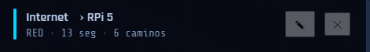 |
| Activo (en ejecución) | Panel: cabecera amarilla + borde izquierdo dorado / Lienzo: cables luminosos, el resto atenuados | 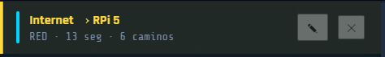 |
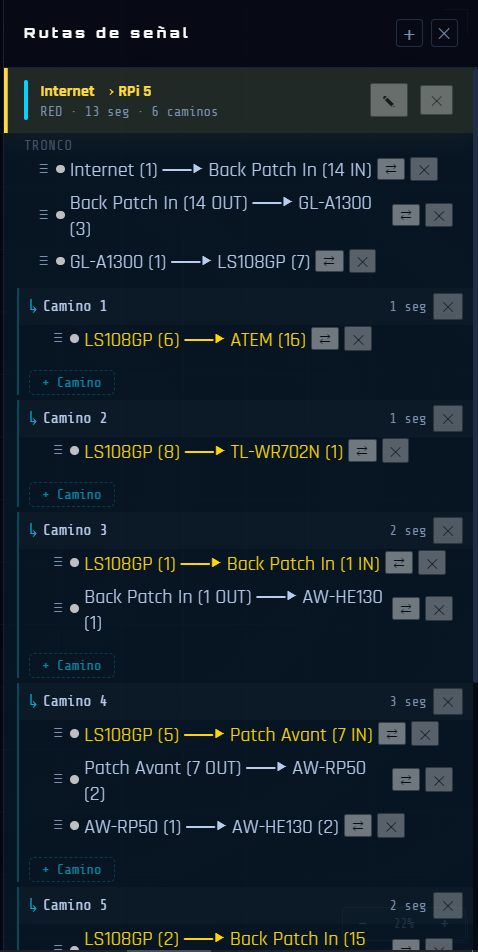
Biblioteca y categorías
Filtros de la barra lateral izquierda
La barra lateral izquierda tiene tres secciones plegables: Categorías, Cables y Zonas. Haz clic en su nombre para plegarla o desplegarla. El interruptor de la fila Todos elige el modo de la sección: aislar (solo se muestran los elementos abiertos) u ocultar (solo desaparecen los elementos cerrados). El ojo junto a cada elemento muestra y permite cambiar su visibilidad real en el modo actual. La barra lateral se abre cuando pasas el ratón sobre la franja izquierda y se cierra automáticamente cuando te alejas. Pulsa B para mantenerla abierta permanentemente. Pulsa de nuevo para volver al modo automático.
Sección Categorías
- Muestra solo las categorías que tienen al menos un dispositivo en el lienzo.
- Modo aislar: muestra sus dispositivos con opacidad total; sus dispositivos fantasma (unidos por un cable) aparecen con opacidad reducida.
- Modo ocultar: de una categoría oculta sus dispositivos, así como los cables que los conectan a un dispositivo que permanece visible; sin matiz fantasma en este modo.
Sección Cables
- Muestra solo los tipos de cable actualmente utilizados en el lienzo.
- Modo aislar: muestra sus cables y los dispositivos conectados; el resto queda oculto, sin matiz fantasma.
- Modo ocultar: de un tipo oculta solo sus cables; sus dispositivos permanecen visibles con normalidad.
Sección Zonas
- Muestra todas las zonas con nombre definidas en el proyecto.
- Modo aislar: muestra los dispositivos cuyo centro está dentro; sus cables hacia el exterior permanecen visibles como fantasma; las etiquetas de texto permanecen siempre visibles.
- Modo ocultar: de una zona oculta los dispositivos cuyo centro está dentro, así como sus cables hacia un dispositivo que permanece visible en otro lugar.
Combinación de filtros y otros comportamientos
- Categoría + Cable combinados: primarios = dispositivos de la categoría seleccionada que además tienen un cable del tipo seleccionado; fantasmas = otras categorías conectadas a un primario mediante ese tipo de cable.
- Seleccionar un dispositivo respeta los filtros activos: un elemento ya oculto por un filtro permanece oculto aunque esté conectado al dispositivo seleccionado.
- Barra de búsqueda: filtra los dispositivos del lienzo por nombre. Haz clic en un resultado para seleccionarlo y centrarlo.
Categorías predeterminadas
Alimentación
Audio
Cámara
Captura
Conversión
Pantalla
Externo
Personalizado
Hub USB
Mezcladora
Ordenador
Rack
Red
Almacenamiento
Vídeo
Sin clasificar
ℹ Se pueden crear categorías personalizadas al añadir un dispositivo — selecciona Personalizado… en la lista desplegable de categorías.
ℹ Sin clasificar es la categoría seleccionada por defecto al añadir un dispositivo. No se puede eliminar.
Cables predeterminados
Dante
DC
DisplayPort
HDMI
Jack 3.5
Jack 6.35
MADI
Óptico
RCA/Cinch
Personalizado… RJ45
SDI
SDI-F
Speakon
Thunderbolt
USB-A
USB-C
USB-DC
XLR
Biblioteca de dispositivos
Tu biblioteca es personal y persiste entre proyectos. Los dispositivos añadidos con ⬡ Nuevo dispositivo se guardan en tu biblioteca y están disponibles en proyectos futuros.
Renombrar una categoría personalizada
Haz doble clic en su nombre en la barra lateral izquierda → edita el nombre → confirma.
Eliminar una categoría personalizada
Haz doble clic en su nombre en la barra lateral izquierda → haz clic en ✕.
⚠ Todos los dispositivos de esta categoría se eliminarán permanentemente.
Añadir un tipo de cable personalizado
En la configuración de los puertos de un dispositivo → lista desplegable Tipo → selecciona Personalizado… al final de la lista. Escribe el nombre del nuevo tipo → confirma. El nuevo tipo está disponible de inmediato y aparece en la sección Cables de la barra lateral izquierda.
Renombrar un tipo de cable personalizado
Haz doble clic en su nombre en la barra lateral izquierda → edita el nombre → confirma.
Eliminar un tipo de cable personalizado
Haz doble clic en su nombre en la barra lateral izquierda → haz clic en ✕.
⚠ Todos los cables de este tipo se eliminarán permanentemente.
Edición de colores
La página Edición de colores permite personalizar los colores de las categorías, los tipos de cable y las zonas del proyecto actual. Los cambios se aplican en tiempo real en el lienzo.
Abrir la página
Menú → Edición → Colores…
Tres columnas
La página está dividida en tres columnas: Categorías, Cables y Zonas.
Haz clic en una fila para abrir su selector de color. Haz clic de nuevo para cerrarlo.
Columna Categorías
Lista todas las categorías presentes en el proyecto.
Selector de color:
- 10 tonos predefinidos
- Rueda de color para un valor libre
El color se aplica de inmediato.
Columna Cables
Lista todos los tipos de cable — nativos y personalizados.
Estilo de línea
Lista todos los estilos de línea: Continuo, Guiones o Guiones largos.
El color y el estilo se aplican de inmediato a todos los cables de ese tipo en el lienzo.
Columna Zonas
Lista todas las zonas con nombre del proyecto actual.
El selector tiene dos pestañas:
| Pestaña | Qué modifica |
|---|---|
| Interior | Color de relleno de la zona. |
| Borde | Color y estilo de línea del borde. |
El estilo de línea (Continuo, Guiones, Guiones largos) solo está disponible en la pestaña Borde.
ℹ Si el proyecto no contiene ninguna zona, la columna Zonas muestra un mensaje vacío. Crea primero una zona (ver Zonas).
Cerrar la página
| Botón | Efecto |
|---|---|
| Aplicar | Cierra la ventana y conserva todos los cambios. |
| Cancelar | Cierra la ventana y anula todos los cambios realizados desde su apertura. |
ℹ Cada cambio de color se puede deshacer individualmente mediante Ctrl + Z o ⌘ + Z.
Subproyectos
ℹ Esta función está reservada a la versión Wires PRO.
Un subproyecto permite importar el contenido de un archivo .wires existente en el proyecto actual. Los dispositivos, cables, rutas de señal y zonas del archivo importado se colocan en el lienzo actual como un bloque independiente, enmarcado por una zona de color con el nombre del proyecto de origen.
Importar un subproyecto
Menú Archivo → Importar proyecto…
Se abre un cuadro de diálogo: selecciona el archivo .wires que quieras importar. Aparece una vista previa punteada bajo el cursor, que representa el área que ocupará el contenido importado.
Mueve el cursor. La vista previa se vuelve roja si la ubicación se superpone con dispositivos existentes — muévela hasta que vuelva a ponerse azul. Haz clic para colocar
Si no hay espacio libre visible, acerca el cursor a un borde de la ventana: el lienzo se desplaza automáticamente y se ralentiza en cuanto se encuentra una ubicación válida. Pulsa Esc o haz clic en ✕ Cancelar en la barra para cancelar la importación.
Qué se importa
- Dispositivos (excepto el icono de Internet)
- Cables internos del proyecto importado
- Rutas de señal
- Zonas
Zona de subproyecto
Se crea automáticamente una zona envolvente azul alrededor del contenido importado, con el nombre del proyecto de origen. Selecciona esta zona para acceder a las acciones en el panel de información de la derecha:
Desconectar (conservar contenido) — la zona se elimina, el contenido permanece en el lienzo como elementos normales.
Eliminar + todo el contenido — elimina la zona y todo lo que contiene.

Atajos de teclado
General
| Atajo | Acción |
|---|---|
| Ctrl + N | Nuevo proyecto |
| ⌘ + N | |
| Ctrl + O | Abrir el archivo |
| ⌘ + O | |
| Ctrl + S | Guardar |
| ⌘ + S | |
| Ctrl + ⇧ + S | Guardar como |
| ⌘ + ⇧ + S | |
| Ctrl + Z | Deshacer |
| ⌘ + Z | |
| Ctrl + ⇧ + Z | Rehacer |
| ⌘ + ⇧ + Z | |
| Ctrl + Y | Rehacer (alternativo) |
| ⌘ + Y | |
| Ctrl + E | Exportar… |
| ⌘ + E | |
| Esc | Salir del modo cable / cerrar modal / deseleccionar todo |
| B | Alternar la barra lateral izquierda |
Selección y edición
| Atajo | Acción |
|---|---|
| Eliminar o ⟵ | Eliminar el elemento seleccionado (dispositivo, cable, texto o zona) |
| ⇧ + clic (cerca del punto final) | Seleccionar el extremo truncado de un cable |
| ↑ ↓ ← → (segmento seleccionado) | Cambiar la dirección de salida del segmento |
| Ctrl + C / Ctrl + X / Ctrl + V | Copiar / Cortar / Pegar |
| ⌘ + C / ⌘ + X / ⌘ + V | |
| Ctrl + clic | Añadir/quitar un dispositivo de la selección |
| ⌘ + clic |
Navegación en el lienzo
| Atajo | Acción |
|---|---|
| F | Ajustar todos los dispositivos a la vista |
| F11 | Pantalla completa |
| + o = / - | Acercar zoom / Alejar zoom |
| Alt + clic y arrastrar en el lienzo | Dibujar un rectángulo de selección |
| Clic derecho + arrastrar | Panorámica — funciona incluso sobre un dispositivo |
| Espacio + arrastrar | |
| Alt + Rueda del ratón | Acercar/alejar el zoom centrado en el cursor (puntual, solo durante ese gesto) |
Exportar
Wires te permite exportar tu plano en varios formatos, cada uno pensado para un uso diferente: compartir de forma interactiva, imprimir, una lista de material, o documentar una ruta de señal concreta.
Ctrl + E o ⌘ + E o Archivo → Exportar… abre una única ventana organizada en 4 pestañas: Lienzo HTML Interactivo, Lienzo PDF, Lista de Material y Rutas.
Cada pestaña da acceso a un formato de exportación diferente, con sus propios ajustes. La ventana permanece abierta después de una exportación: puedes encadenar varias exportaciones o ajustar las opciones sin tener que volver a abrirla.
Lienzo HTML Interactivo
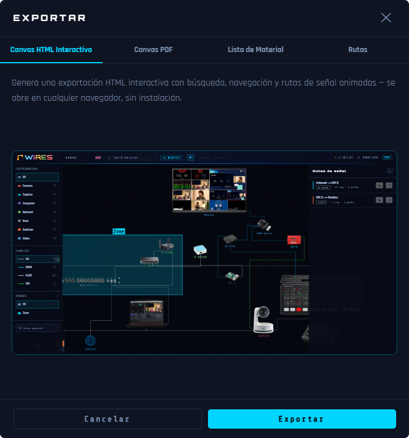
Genera un archivo HTML autónomo e interactivo, para abrir en cualquier navegador: búsqueda, navegación y animación de las rutas de señal, exactamente igual que en Wires.
Uso
- Haz clic directamente en Exportar y elige la carpeta de destino y el nombre del archivo.
- El resultado es un archivo .zip que contiene un archivo .html y una carpeta assets/ con las imágenes de los dispositivos.
- El archivo .html y la carpeta assets/ que lo acompaña deben permanecer juntos y subirse al mismo lugar. También puedes verlo en local tras extraer el zip, o enviarlo directamente en su versión .zip.
Casos de uso - compartir, integrar, presentar
El visor HTML es el formato de entrega ideal cuando Wires no se puede instalar en la máquina del destinatario:
- Integración en sitio web o intranet: copia el archivo .html en tu servidor web o intranet. Los visitantes recorren el plano interactivo completo en cualquier navegador, hacen clic en los dispositivos y los cables para ver más detalles y observan cómo se animan las rutas de señal, sin necesidad de instalar software.
- Compartir con el equipo o el cliente: envía el archivo por correo electrónico o por transferencia de archivos. El destinatario lo abre en su navegador y obtiene una copia viva y totalmente navegable de tu plano. Mucho más informativo que un PDF plano.
- Presentación en directo: abre el archivo HTML en un proyector o una pantalla compartida. Haz clic en cada dispositivo para mostrar sus especificaciones, haz doble clic en un cable para animar la ruta y guía a las partes interesadas de forma interactiva a lo largo de toda la cadena de señal.
Funciones interactivas en el visor
El visor conserva la experiencia interactiva completa de Wires. Cada elemento es clicable y totalmente explorable:
| Acción | Efecto en el visor |
|---|---|
| Haz clic en un dispositivo | Abre el panel de información de la derecha sobre el dispositivo: nombre, categoría y lista completa de los cables conectados a él. |
| Haz clic en un cable | Abre el panel de información de la derecha sobre el cable: tipo de señal, dispositivo de origen, dispositivo de destino. Si el cable pertenece a una o varias rutas de señal, aparecen chips de ruta: haz clic en un chip para abrir el panel Rutas e iniciar la animación de esa ruta. |
| Haz doble clic en un cable | Alterna el flujo de señal animado para todas las rutas que usan este cable. Una partícula luminosa se desplaza a lo largo del trazado del cable desde el origen hasta el destino. Haz doble clic de nuevo para detenerlo. |
| Haz clic en un lienzo vacío | Detiene cualquier animación en curso y restaura todos los cables y dispositivos a su apariencia normal. |
| Panel Rutas | Haz clic en el botón ⬡ ROUTES (barra superior) para abrir el panel. Haz doble clic en el título de una ruta para iniciar la animación. Haz clic una vez en el título para detenerla. |
| Zoom | Rueda del ratón: hace zoom de acercamiento y alejamiento centrado en el lienzo. Rango: 0,15× a 4×. |
| Centrado del zoom | Haz clic en el botón para alternar el zoom de la rueda del ratón al modo centrado en el cursor (permanente). |
| Alt + Rueda del ratón | Acercar/alejar el zoom centrado en el cursor (puntual, solo durante ese gesto). |
| Panorámica | Haz clic izquierdo + arrastra sobre un lienzo vacío. El clic central + arrastrar también funciona. |
| Filtros Categorías / Cables / Zonas | Barra lateral izquierda — mismos filtros aislar/ocultar que al crear el archivo (ver Biblioteca y categorías). |
ℹ El visor es de solo lectura. Todas las funciones interactivas de navegación y animación funcionan exactamente igual que en Wires, pero el plano no se puede modificar: ningún dispositivo puede moverse, crearse ni eliminarse.
Lienzo PDF
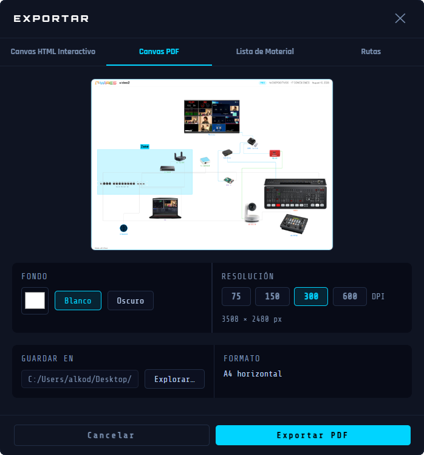
Genera un PDF A4 horizontal que reproduce todo el lienzo: dispositivos, cables, etiquetas y zonas tal como se muestran.
Uso
- Elige el Fondo: Blanco , Oscuro , o un color personalizado.
- Elige la Resolución: 75, 150, 300 o 600 DPI.
- Una vista previa con zoom y desplazable refleja el resultado en directo.
- Haz clic en Exportar y selecciona dónde quieres guardar tu archivo.
- El PDF se abre automáticamente después de guardarlo.
ℹ La resolución de exportación se puede elegir antes de guardar: 75 dpi está disponible en todas las versiones. Las resoluciones superiores (150, 300 y 600 dpi) están reservadas a Wires PRO.
Lista de Material
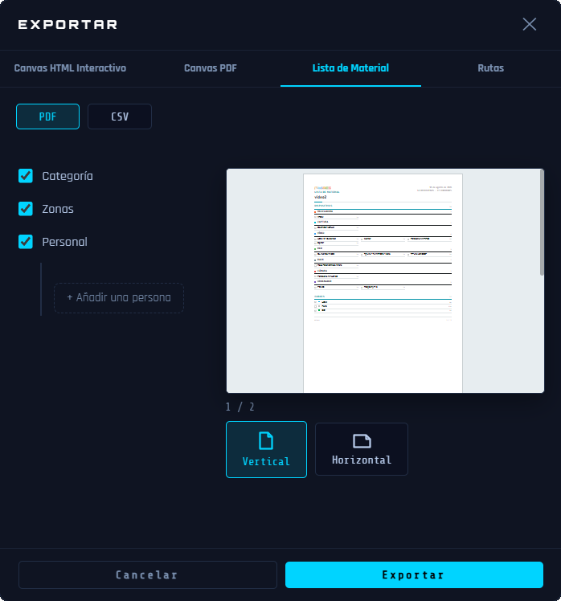
Genera la lista completa de los dispositivos y cables del proyecto, en PDF o CSV.
Uso
- Elige el formato: PDF o CSV , en la parte superior de la pestaña.
- Categoría: agrupa los dispositivos por categoría.
- Zonas: añade una sección separada por zona después de la lista principal — la lista principal en sí no se filtra.
- Personal: muestra las personas responsables junto a los elementos correspondientes.
- Botón + Añadir una persona : dale un nombre y elige si es responsable de dispositivos, de una categoría o de una zona.
- Vertical u Horizontal.
- Una miniatura de vista previa (formato PDF) refleja el resultado en directo — haz clic en ella para abrirla a pantalla completa.
- En CSV, las columnas exportadas son: Zona, Categoría, Tipo, Nombre, Cantidad, Longitud, Responsable.
- Haz clic en Exportar y selecciona dónde quieres guardar tu archivo.
- El archivo se abre automáticamente después de guardarlo.
ℹ El icono de Internet queda excluido de la lista de material. Las casillas □ están pensadas para usarse en una copia impresa.
Rutas
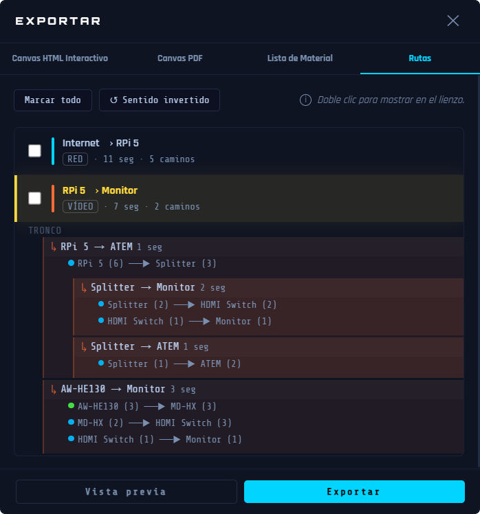
Exporta una o varias rutas de señal seleccionadas como un documento: texto detallado de la ruta junto con un diagrama.
Uso
- Marca una o varias rutas en la lista.
- Haz doble clic en una ruta, un camino o un cable para resaltarlo directamente en el lienzo.
- Origen → Destino : invierte el sentido de la señal para Destino → Origen .
- Vista previa abre el documento en una ventana separada para comprobarlo antes de exportar.
- Haz clic en Exportar y selecciona dónde quieres guardar tu archivo.
- El PDF se abre automáticamente después de guardarlo.
Enrutamiento profesional de señal AV
© 2026 Alkoda. Todos los derechos reservados.